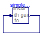

Simple steady state initialization of an FMU leading to a nonlinear system of equations over FMUs during initialization. A parameter is back-calculated from the state/steady-state conditions
Information
With this test model the following properties are tested:
- Defining an FMU with incomplete initialization (so this FMU can only be simulated
if additional initialization conditions are defined in the environment where the FMU
is imported).
- In the environment one instance is defined with steady-state and state initialization.
The value of parameter gain shall be determined so that the initialization conditions
are fulfilled.
- This FMU leads to a nonlinear algebraic equation over the FMU during initialization.
Extends from Modelica.Icons.ExamplesPackage (Icon for packages containing runnable examples).
Package Content
| Name |
Description |
 WithFMUsReference WithFMUsReference
|
Reference solution in pure Modelica using exactly the same structuring as in Model WithFMUs |
| WithFMUs
|
Solution with FMUs |
 FMUModels FMUModels
|
For all models in this package an FMU must be generated |
Reference solution in pure Modelica using exactly the same structuring as in Model WithFMUs

Information
Extends from Modelica.Icons.Example (Icon for runnable examples).
Modelica definition
model WithFMUsReference
"Reference solution in pure Modelica using exactly the same structuring as in Model WithFMUs"
extends Modelica.Icons.Example;
FMUModels.SimpleNonlinearModel simpleWithParameter(
x(fixed=true, start=3),
xd(fixed=true, start=0),
gain(start=-5, fixed=false));
equation
connect(simpleWithParameter.y, simpleWithParameter.u);
end WithFMUsReference;
Solution with FMUs
Information
Extends from Modelica.Icons.Example (Icon for runnable examples).
Modelica definition
model WithFMUs
"Solution with FMUs"
extends Modelica.Icons.Example;
FMUModels.SimpleNonlinearModel simpleWithParameter(
x(fixed=true, start=3),
gain(start=-5, fixed=false));
initial equation
simpleWithParameter.xd=0;
equation
connect(simpleWithParameter.y, simpleWithParameter.u);
end WithFMUs;
Automatically generated Fri Apr 25 16:23:29 2014.
 FMITest.Initialization.NonlinearSystems.SimpleParameter.WithFMUsReference
FMITest.Initialization.NonlinearSystems.SimpleParameter.WithFMUsReference